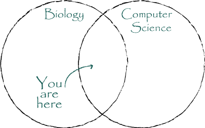

At the intersection of biology and computer science
About Me
I am a B.S. Biology/M.S. Computer Science co-terminal degree student at
Illinois Institute of Technology in Chicago, IL, currently in my fourth and
final year. Since 2015, I've been a research assistant in the Pombert Lab as
well as a teaching assistant in the Computer Science Department. I am
interested in research questions in computational biology and
bioinformatics, specifically in the field of genomics. Though my research
and interests are interdisciplinary and I spend most of my time on a
computer, at heart I consider myself a biologist - I enjoy programming and
often write computer programs that will facilitate my research, but
ultimately it is the biologically-relevant results of my projects that pique
my curiosity and motivate my studies.
Research
Comparative Genomics of Neisseria Species
I have sequenced six Neisseria species and am studying how they compare to
the rest of the genus. I am also investigating the Oxford Nanopore sequencing
technology, and how it can be used in tandem with Illumina sequencing.
SNP Analysis Pipeline
The Pombert Lab has developed a pipeline that integrates common software for
read mapping, SNP calling, clustering, and visualization. I worked on a script
that generates synthetic sequence reads from genome assemblies.
Comparative Genomics of Vitreoscilla sp. C1
The first bacterial hemoglobin was isolated from Vitreoscilla sp. strain C1.
I sequenced the genome of this species and compared it to its relatives in the
Neisseriaceae family, including Vitreoscilla stercoraria.
Teaching
CS105: Introduction to Computer Programming
A C++ class for students not in computer science disciplines. This is my
second semester teaching the lab section of the course.
CS115: Introduction to Object-oriented Programming
A Java class for computer science students. I have taught the lab section
for this course for four semesters so far.
Course Projects
Student Cluster Competition 2017
I am part of a team of students who will be competing in the Student
Cluster Competition this November. We are profiling and optimizing
scientific applications so that they will run efficiently and with
maximum performance on our custom-built cluster during the contest.
GUI design for AIGDock
In Summer 2016, I took part in a web development team project. We designed a graphical user
interface for AIGDock, a protein-ligand docking software developed by Dr. David Minh's lab.
Our aim was to increase the accessibility of this software for researchers without
computational backgrounds.
Classification of Horizontal Gene Transfer
For a Machine Learning course in Fall 2016, I developed classification
models to predict instances of horizontal gene transfer in bacterial
genomes.
Automated Essay Grading
For a Data Mining course in Spring 2017, my team explored feature
engineering for accurate score classification of essays and short answer
responses, which could be used by primary school teachers to provide faster
feedback to their students.